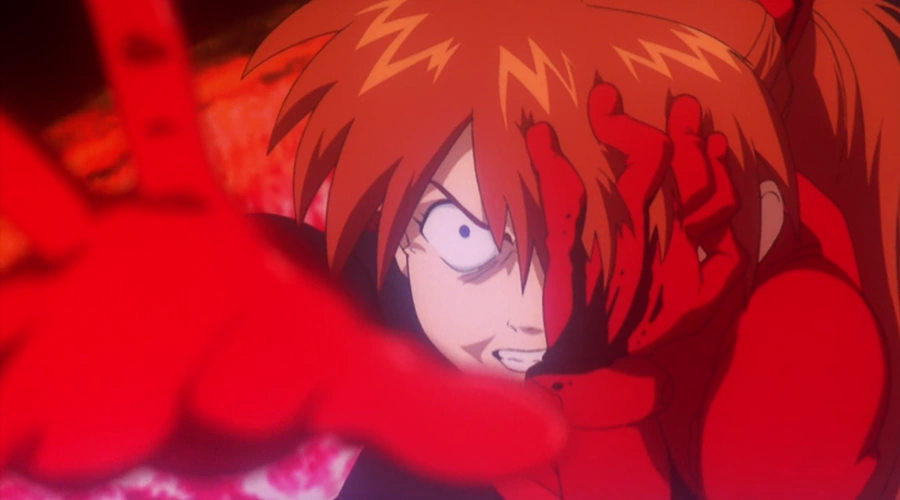

Asuka Langley Soryu (式波・アスカ・ラングレー, Shikinami Asuka Rangurē) es la protagonista femenina de la serie de anime Neon Genesis Evangelion.
Es la segunda niña y la piloto de la Unidad Evangelion-02.
Su infancia fue marcada por el suicidio de su madre y el abandono de su padre.
Es una chica extrovertida y arrogante, que sufre de depresión y ansiedad.